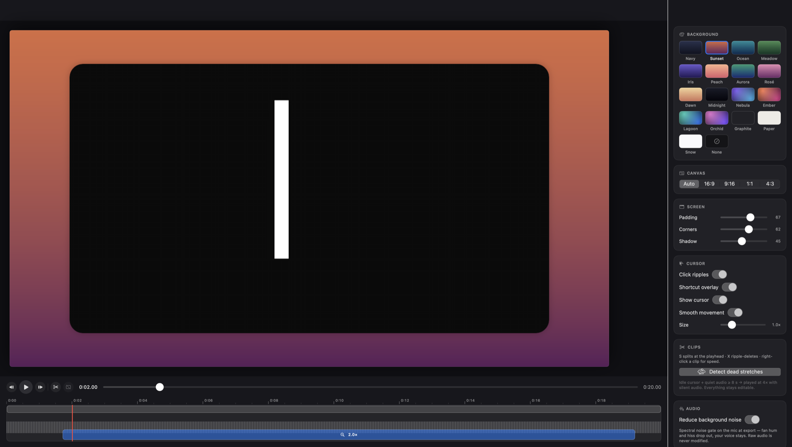
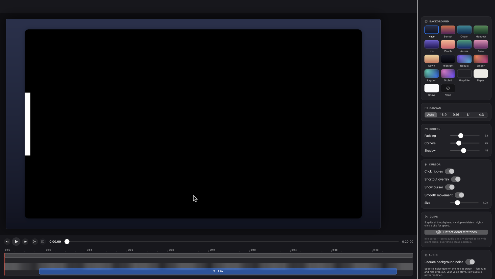

Screenreel records your Mac like a black box and edits like a studio — automatic zooms, cuts, captions, and camera scenes, computed entirely on your machine.

Every click you recorded becomes an editing decision you can revise — nothing is baked into the pixels.

Everything that touches your voice and words runs on the Mac in front of you.
A recording is an open package of segmented raw media, a hash-chained journal, and an atomically replaced manifest — not one fragile MP4 that must finalize perfectly. Kill the app mid-take and the project reopens, validated, with everything up to the last few seconds intact.
Exports inherit the same spine: checkpointed segments mean a crash loses at most one, and exporting again resumes instead of starting over.
Clicks ring under the cursor; an opt-in overlay shows ⌘⇧P — shortcuts only, never your typing.
The same styled composition, as a share-anywhere GIF with a sane size budget.
16:9, 9:16, 1:1 — zooms are source-anchored, so nothing needs re-aiming.
Name a look — background, padding, cursor, camera — and apply it to every recording.
Record, validate, export, caption, and inspect from scripts, through the same tested engines.
5K styled export at ~2× real time, ~70 MB peak, zero leaks measured.
Every release is a Developer ID-signed, Apple-notarized disk image published on GitHub — no installer, no account, no launcher. Drag it to Applications and record.
Permanent link to the newest disk image:
github.com/nipunbatra/screenreel/releases/latest/download/Screenreel.dmg
Prefer to see what you run? Build it from source — the release is the same code, signed.
A Pro license funds development and comes with priority support and a year of updates under your key. It is the same app — nothing is locked away.